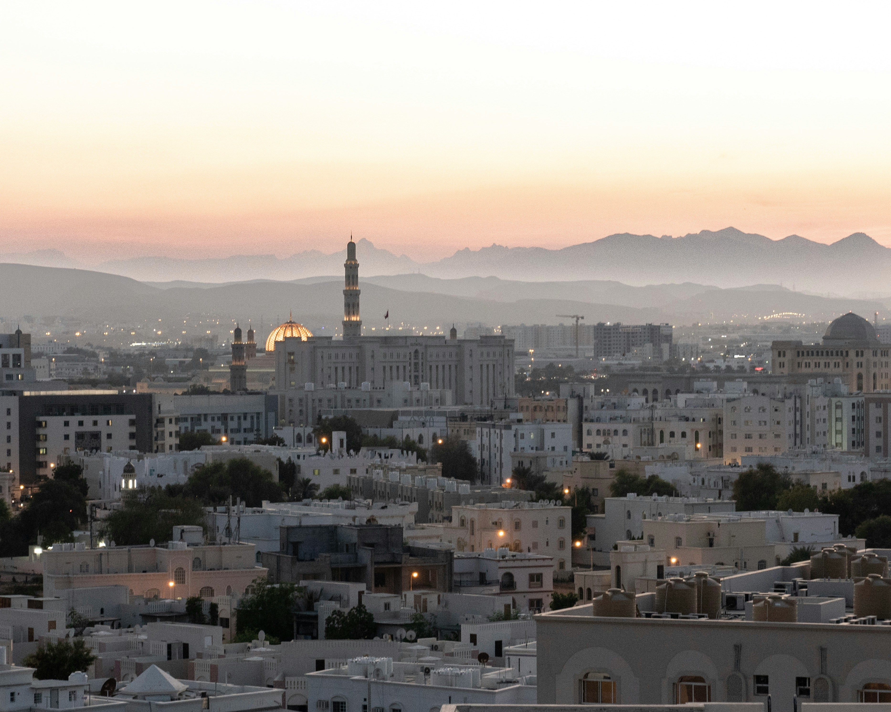

Why Oman?
Where Heritage Meets Horizon
Oman is a country that invites you to slow down and experience authenticity at its finest. From the ancient forts of Nizwa to the mountain villages of Jebel Akhdar, every corner tells a story — one shaped by centuries of trade, faith, and community.
Here, hospitality is more than a custom — it's a way of life. The scent of frankincense drifts through bustling souqs, and the evening call to prayer echoes softly across sun-washed stone. Whether you're exploring dramatic wadis or watching the sunset over the Arabian Sea, Oman offers a rare kind of peace — one that stays with you long after you've left.